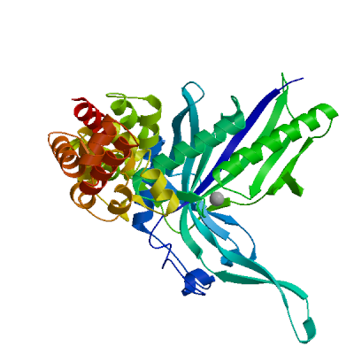

Model Building Report
This document lists the results for the homology modelling project "GATB_MYCTU P9WN61 Aspartyl/glutamyl-tRNA(Asn/Gln) amidotransferase subunit B" submitted to SWISS-MODEL workspace on Jan. 8, 2025, 3:24 p.m..The submitted primary amino acid sequence is given in Table T1.
If you use any results in your research, please cite the relevant publications:
- Waterhouse A, Bertoni M, Bienert S, Studer G, Tauriello G, Gumienny R, Heer FT, de Beer TAP, Rempfer C, Bordoli L, Lepore R, Schwede TSWISS-MODEL: homology modelling of protein structures and complexes.Nucleic Acids Res 46, W296-W303. (2018)
 29788355
29788355 10.1093/nar/gky427
10.1093/nar/gky427 - Bienert S, Waterhouse A, de Beer TAP, Tauriello G, Studer G, Bordoli L, Schwede TThe SWISS-MODEL Repository - new features and functionality.Nucleic Acids Res 45, D313-D319. (2017)2789967210.1093/nar/gkw1132
- Studer G, Tauriello G, Bienert S, Biasini M, Johner N, Schwede TProMod3 - A versatile homology modelling toolbox.PLOS Comp Biol 17(1), e1008667. (2021)3350798010.1371/journal.pcbi.1008667
- Studer G, Rempfer C, Waterhouse AM, Gumienny R, Haas J, Schwede TQMEANDisCo - distance constraints applied on model quality estimation.Bioinformatics 36, 1765-1771. (2020)3169731210.1093/bioinformatics/btz828
- Bertoni M, Kiefer F, Biasini M, Bordoli L, Schwede TModeling protein quaternary structure of homo- and hetero-oligomers beyond binary interactions by homology.Scientific Reports 7. (2017)2887468910.1038/s41598-017-09654-8
Results
The SWISS-MODEL template library (SMTL version 2025-01-08, PDB release 2025-01-03) was searched with BLAST (Camacho et al.) and HHblits (Steinegger et al.) for evolutionary related structures matching the target sequence in Table T1. For details on the template search, see Materials and Methods. Overall 100 templates were found (Table T2).
Models
The following models were built (see Materials and Methods "Model Building"):
Model #01 |
File | Built with | Oligo-State | Ligands | GMQE |
|---|---|---|---|---|---|

|
PDB | ProMod3 3.4.1 | monomer |
None
|
0.92 |
|
|
| Template | Seq Identity | Oligo-state | QSQE | Found by | Method | Resolution | Seq Similarity | Range | Coverage | Description |
|---|---|---|---|---|---|---|---|---|---|---|
| A1KN04.1.A | 100.00 | monomer | - | AFDB search | AlphaFold v2 | - | 0.61 | 1 - 509 | 1.00 | Aspartyl/glutamyl-tRNA(Asn/Gln) amidotransferase subunit B |
The template contained no ligands.
Target MTVAAGAAKAAGAELLDYDEVVARFQPVLGLEVHVELSTATKMFCGCTTTFGGEPNTQVCPVCLGLPGSLPVLNRAAVES
A1KN04.1.AMTVAAGAAKAAGAELLDYDEVVARFQPVLGLEVHVELSTATKMFCGCTTTFGGEPNTQVCPVCLGLPGSLPVLNRAAVES
Target AIRIGLALNCEIVPWCRFARKNYFYPDMPKNYQISQYDEPIAINGYLDAPLEDGTTWRVEIERAHMEEDTGKLTHIGSET
A1KN04.1.AAIRIGLALNCEIVPWCRFARKNYFYPDMPKNYQISQYDEPIAINGYLDAPLEDGTTWRVEIERAHMEEDTGKLTHIGSET
Target GRIHGATGSLIDYNRAGVPLIEIVTKPIVGAGARAPQIARSYVTALRDLLRALDVSDVRMDQGSMRCDANVSLKPAGTTE
A1KN04.1.AGRIHGATGSLIDYNRAGVPLIEIVTKPIVGAGARAPQIARSYVTALRDLLRALDVSDVRMDQGSMRCDANVSLKPAGTTE
Target FGTRTETKNVNSLKSVEVAVRYEMQRQGAILASGGRITQETRHFHEAGYTSAGRTKETAEDYRYFPEPDLEPVAPSRELV
A1KN04.1.AFGTRTETKNVNSLKSVEVAVRYEMQRQGAILASGGRITQETRHFHEAGYTSAGRTKETAEDYRYFPEPDLEPVAPSRELV
Target ERLRQTIPELPWLSRRRIQQEWGVSDEVMRDLVNAGAVELVAATVEHGASSEAARAWWGNFLAQKANEAGIGLDELAITP
A1KN04.1.AERLRQTIPELPWLSRRRIQQEWGVSDEVMRDLVNAGAVELVAATVEHGASSEAARAWWGNFLAQKANEAGIGLDELAITP
Target AQVAAVVALVDEGKLSNSLARQVVEGVLAGEGEPEQVMTARGLALVRDDSLTQAAVDEALAANPDVADKIRGGKVAAAGA
A1KN04.1.AAQVAAVVALVDEGKLSNSLARQVVEGVLAGEGEPEQVMTARGLALVRDDSLTQAAVDEALAANPDVADKIRGGKVAAAGA
Target IVGAVMKATRGQADAARVRELVLEACGQG
A1KN04.1.AIVGAVMKATRGQADAARVRELVLEACGQG
Model #02 |
File | Built with | Oligo-State | Ligands | GMQE | QMEANDisCo Global |
|---|---|---|---|---|---|---|
|  | PDB | ProMod3 3.4.1 | monomer |
1 x MG: MAGNESIUM ION;
|
0.74 | 0.74 ± 0.05 |
|
|
| Template | Seq Identity | Oligo-state | QSQE | Found by | Method | Resolution | Seq Similarity | Range | Coverage | Description |
|---|---|---|---|---|---|---|---|---|---|---|
| 3ip4.1.B | 42.58 | monomer | 0.00 | HHblits | X-ray | 1.90Å | 0.40 | 23 - 508 | 0.93 | Aspartyl/glutamyl-tRNA(Asn/Gln) amidotransferase subunit B |
Included Ligands
| Ligand | Description |
|---|---|
| 1 x MG | MAGNESIUM ION |
Target MTVAAGAAKAAGAELLDYDEVVARFQPVLGLEVHVELSTATKMFCGCTTTFGGEPNTQVCPVCLGLPGSLPVLNRAAVES
3ip4.1.B ----------------------MHFETVIGLEVHVELKTDSKMFSPSPAHFGAEPNSNTNVIDLAYPGVLPVVNKRAVDW
Target AIRIGLALNCEIVPWCRFARKNYFYPDMPKNYQISQYDEPIAINGYLDAPLEDGTTWRVEIERAHMEEDTGKLTHIGSET
3ip4.1.B AMRAAMALNMEIATESKFDRKNYFYPDNPKAYQISQFDQPIGENGYIDIEVD-GETKRIGITRLHMEEDAGKSTHKG---
Target GRIHGATGSLIDYNRAGVPLIEIVTKPIVGAGARAPQIARSYVTALRDLLRALDVSDVRMDQGSMRCDANVSLKPAGTTE
3ip4.1.B ------EYSLVDLNRQGTPLIEIVSEPDI----RSPKEAYAYLEKLRSIIQYTGVSDVKMEEGSLRCDANISLRPYGQEK
Target FGTRTETKNVNSLKSVEVAVRYEMQRQGAILASGGRITQETRHFHE-AGYTSAGRTKETAEDYRYFPEPDLEPVAPSREL
3ip4.1.B FGTKAELKNLNSFNYVRKGLEYEEKRQEEELLNGGEIGQETRRFDESTGKTILMRVKEGSDDYRYFPEPDIVPLYIDDAW
Target VERLRQTIPELPWLSRRRIQQEWGVSDEVMRDLVNA-GAVELVAATVEHGASSEAARAWWGNFLAQKANEAGIGLDELAI
3ip4.1.B KERVRQTIPELPDERKAKYVNELGLPAYDAHVLTLTKEMSDFFESTIEHGADVKLTSNWLMGGVNEYLNKNQVELLDTKL
Target TPAQVAAVVALVDEGKLSNSLARQVVEGVLAGEGEPEQVMTARGLALVRDDSLTQAAVDEALAANPDVADKIRGGKVAAA
3ip4.1.B TPENLAGMIKLIEDGTMSSKIAKKVFPELAAKGGNAKQIMEDNGLVQISDEATLLKFVNEALDNNEQSVEDYKNGKGKAM
Target GAIVGAVMKATRGQADAARVRELVLEACGQG
3ip4.1.B GFLVGQIMKASKGQANPQLVNQLLKQELDK-
Model #03 |
File | Built with | Oligo-State | Ligands | GMQE | QMEANDisCo Global |
|---|---|---|---|---|---|---|
| PDB | ProMod3 3.4.1 | monomer |
1 x ZN: ZINC ION;
|
0.69 | 0.66 ± 0.05 |
|
|
| Template | Seq Identity | Oligo-state | QSQE | Found by | Method | Resolution | Seq Similarity | Range | Coverage | Description |
|---|---|---|---|---|---|---|---|---|---|---|
| 3al0.1.B | 39.75 | monomer | 0.00 | HHblits | X-ray | 3.37Å | 0.40 | 23 - 508 | 0.94 | Aspartyl/glutamyl-tRNA(Asn/Gln) amidotransferase subunit B |
Included Ligands
| Ligand | Description |
|---|---|
| 1 x ZN | ZINC ION |
Excluded ligands
| Ligand Name.Number | Reason for Exclusion | Description |
|---|---|---|
| GSU.2 | Binding site not conserved. | O5'-(L-GLUTAMYL-SULFAMOYL)-ADENOSINE |
Target MTVAAGAAKAAGAELLDYDEVVARFQPVLGLEVHVELSTATKMFCGCTTT-FGGEPNTQVCPVCLGLPGSLPVLNRAAVE
3al0.1.B ----------------------MRYRPVIGLEIHVQLSTKTKAFCSCPADVFELPPNTAICPVCTGQPGALPVPNEEMIR
Target SAIRIGLALNCEIVPWCRFARKNYFYPDMPKNYQISQYDEPIAINGYLDAPLEDGTTWRVEIERAHMEEDTGKLTHIGSE
3al0.1.B FAVKTALALNCKIHKYSRFDRKNYFYPDLPKGYQISQYFYPIATEGFLEIDGDE-GRKKVRIRRLHLEEDAGKLVHEGDS
Target TGRIHGATGSLIDYNRAGVPLIEIVTKPIVGAGARAPQIARSYVTALRDLLRALDVSDVRMDQGSMRCDANVSLKPAGTT
3al0.1.B I---TRASYSLVDMNRCGVPLIEIVTEPDI----SSPREARVFMEKLRSIVRYLGVSTGDMEKGALRCDANISVVDTETG
Target EFGTRTETKNVNSLKSVEVAVRYEMQRQGAILASGGRITQETRHFHEA-GYTSAGRTKETAEDYRYFPEPDLEPVAPSRE
3al0.1.B RQSNRVEVKNMNSFRFVERALEYEFERIVKAMERGEDVERETRGWDMATKITVSMRGKEEESDYRYFPEPDIPPVVLSDE
Target LVERLRQTIPELPWLSRRRIQQEWGVSDEVMRDLVNAG-AVELVAATVEHGASSEAARAWWGNFLAQKANEAGIGLDELA
3al0.1.B YLEEVKKELPELPDEKAERFMREYGLPEYDAKVLTSSKELAEFFEECVKVVNRPKDLSNWIMTEVLRELNERNIEITESK
Target ITPAQVAAVVALVDEGKLSNSLARQVVEGVLAGEGEPEQVMTARGLALVRDDSLTQAAVDEALAANPDVADKIRGGKVAA
3al0.1.B LTPQHFADLFKLMDEGKISIKIAKEIFPEVFETGKMPSQIVEEKGLTQINDEKLIEELVKKAMEQNPKAVQDYKSGKKKA
Target AGAIVGAVMKATRGQADAARVRELVLEACGQG
3al0.1.B AGFFVGYVMRETKGKANPELTNRIIQKLLEG-
Model #04 |
File | Built with | Oligo-State | Ligands | GMQE | QMEANDisCo Global |
|---|---|---|---|---|---|---|
| PDB | ProMod3 3.4.1 | monomer |
None
|
0.17 | 0.46 ± 0.07 |
|
|
| Template | Seq Identity | Oligo-state | QSQE | Found by | Method | Resolution | Seq Similarity | Range | Coverage | Description |
|---|---|---|---|---|---|---|---|---|---|---|
| 2d6f.1.F | 30.26 | monomer | 0.00 | BLAST | X-ray | 3.15Å | 0.35 | 251 - 426 | 0.38 | Glutamyl-tRNA(Gln) amidotransferase subunit E |
Excluded ligands
| Ligand Name.Number | Reason for Exclusion | Description |
|---|---|---|
| ZN.1 | Binding site not conserved. | ZINC ION |
| ZN.2 | Binding site not conserved. | ZINC ION |
Target MTVAAGAAKAAGAELLDYDEVVARFQPVLGLEVHVELSTATKMFCGCTTTFGGEPNTQVCPVCLGLPGSLPVLNRAAVES
2d6f.1.F --------------------------------------------------------------------------------
Target AIRIGLALNCEIVPWCRFARKNYFYPDMPKNYQISQYDEPIAINGYLDAPLEDGTTWRVEIERAHMEEDTGKLTHIGSET
2d6f.1.F --------------------------------------------------------------------------------
Target GRIHGATGSLIDYNRAGVPLIEIVTKPIVGAGARAPQIARSYVTALRDLLRALDVSDVRMDQGSMRCDANVSLKPAGTTE
2d6f.1.F --------------------------------------------------------------------------------
Target FGTRTETKNVNSLKSVEVAVRYEMQRQGAILASGGRITQETRHFHEAGYTSAGRTKETAEDYRYFPEPDLEPVAPSRELV
2d6f.1.F ----------NALR--EVIRRAEMAIQG--------VPEETRKALPDGNTQYLRPLPTSS--RMYLETDIPLFRIEDDLL
Target ERLRQTIPELPWLSRRRIQQEWGVSDEVMRDLVNAGAVELVAATVEHGASSEAARAWWGNFLAQKANEA----GIGLDEL
2d6f.1.F EGIRRNLPELPSEKKERIMRDYGLSEDLASQLVKRNLVDEFEALTEFRVDTTVIASLLAYTLRELRREGHDVDGLGLDEL
Target AITPAQVAAVVALVDEGKLSNSLARQVVEGVLAGEG-EPEQVMTARGLALVRDDSLTQAAVDEALAANPDVADKIRGGKV
2d6f.1.F -------RDAIKLLEVGKISKDALRDIV-ACMADEGLAAEDAARKLNLLLLAEDEI-ESIIQEIVEGNLDM---------
Target AAAGAIVGAVMKATRGQADAARVRELVLEACGQG
2d6f.1.F ----------------------------------
Model #05 |
File | Built with | Oligo-State | Ligands | GMQE | QMEANDisCo Global |
|---|---|---|---|---|---|---|
| PDB | ProMod3 3.4.1 | monomer |
None
|
0.02 | 0.55 ± 0.12 |
|
|
| Template | Seq Identity | Oligo-state | QSQE | Found by | Method | Resolution | Seq Similarity | Range | Coverage | Description |
|---|---|---|---|---|---|---|---|---|---|---|
| 6mte.72.A | 9.09 | monomer | 0.00 | HHblits | EM | - | 0.28 | 312 - 355 | 0.09 | eS25 |
The template contained no ligands.
Target MTVAAGAAKAAGAELLDYDEVVARFQPVLGLEVHVELSTATKMFCGCTTTFGGEPNTQVCPVCLGLPGSLPVLNRAAVES
6mte.72.A --------------------------------------------------------------------------------
Target AIRIGLALNCEIVPWCRFARKNYFYPDMPKNYQISQYDEPIAINGYLDAPLEDGTTWRVEIERAHMEEDTGKLTHIGSET
6mte.72.A --------------------------------------------------------------------------------
Target GRIHGATGSLIDYNRAGVPLIEIVTKPIVGAGARAPQIARSYVTALRDLLRALDVSDVRMDQGSMRCDANVSLKPAGTTE
6mte.72.A --------------------------------------------------------------------------------
Target FGTRTETKNVNSLKSVEVAVRYEMQRQGAILASGGRITQETRHFHEAGYTSAGRTKETAEDYRYFPEPDLEPVAPSRELV
6mte.72.A -----------------------------------------------------------------------LVLFDKATY
Target ERLRQTIPELPWLSRRRIQQEWGVSDEVMRDLVNAGAVELVAATVEHGASSEAARAWWGNFLAQKANEAGIGLDELAITP
6mte.72.A DKLCKEVPNYKLITPAVVSERLKIRGSLARAALQE---------------------------------------------
Target AQVAAVVALVDEGKLSNSLARQVVEGVLAGEGEPEQVMTARGLALVRDDSLTQAAVDEALAANPDVADKIRGGKVAAAGA
6mte.72.A --------------------------------------------------------------------------------
Target IVGAVMKATRGQADAARVRELVLEACGQG
6mte.72.A -----------------------------
Materials and Methods
Template Search
Template search with BLAST and HHblits has been performed against the SWISS-MODEL template library (SMTL, last update: 2025-01-08, last included PDB release: 2025-01-03).
The target sequence was searched with BLAST against the primary amino acid sequence contained in the SMTL. A total of 18 templates were found.
An initial HHblits profile has been built using the procedure outlined in (Steinegger et al.), followed by 1 iteration of HHblits against Uniclust30 (Mirdita, von den Driesch et al.). The obtained profile has then be searched against all profiles of the SMTL. A total of 85 templates were found.
Template Selection
For each identified template, the template's quality has been predicted from features of the target-template alignment. The templates with the highest quality have then been selected for model building.
Model Building
Models are built based on the target-template alignment using ProMod3 (Studer et al.). Coordinates which are conserved between the target and the template are copied from the template to the model. Insertions and deletions are remodelled using a fragment library. Side chains are then rebuilt. Finally, the geometry of the resulting model is regularized by using a force field.
Model Quality Estimation
The global and per-residue model quality has been assessed using the QMEAN scoring function (Studer et al.).
Ligand Modelling
Ligands present in the template structure are transferred by homology to the model when the following criteria are met: (a) The ligands are annotated as biologically relevant in the template library, (b) the ligand is in contact with the model, (c) the ligand is not clashing with the protein, (d) the residues in contact with the ligand are conserved between the target and the template. If any of these four criteria is not satisfied, a certain ligand will not be included in the model. The model summary includes information on why and which ligand has not been included.
Oligomeric State Conservation
The quaternary structure annotation of the template is used to model the target sequence in its oligomeric form. The method (Bertoni et al.) is based on a supervised machine learning algorithm, Support Vector Machines (SVM), which combines interface conservation, structural clustering, and other template features to provide a quaternary structure quality estimate (QSQE). The QSQE score is a number between 0 and 1, reflecting the expected accuracy of the interchain contacts for a model built based a given alignment and template. Higher numbers indicate higher reliability. This complements the GMQE score which estimates the accuracy of the tertiary structure of the resulting model.
References
- Camacho C, Coulouris G, Avagyan V, Ma N, Papadopoulos J, Bealer K, Madden TLBLAST+: architecture and applications.BMC Bioinformatics, 10, 421-430. (2009)2000350010.1186/1471-2105-10-421
- Steinegger M, Meier M, Mirdita M, Vöhringer H, Haunsberger SJ, Söding JHH-suite3 for fast remote homology detection and deep protein annotation.BMC Bioinformatics 20, 473. (2019)3152111010.1186/s12859-019-3019-7
- Mirdita M, von den Driesch L, Galiez C, Martin MJ, Söding J, Steinegger MUniclust databases of clustered and deeply annotated protein sequences and alignments.Nucleic Acids Res, 45, D170–D176. (2016)2789957410.1093/nar/gkw1081
Table T1:
Primary amino acid sequence for which templates were searched and models were built.
KNYFYPDMPKNYQISQYDEPIAINGYLDAPLEDGTTWRVEIERAHMEEDTGKLTHIGSETGRIHGATGSLIDYNRAGVPLIEIVTKPIVGAGARAPQIAR
SYVTALRDLLRALDVSDVRMDQGSMRCDANVSLKPAGTTEFGTRTETKNVNSLKSVEVAVRYEMQRQGAILASGGRITQETRHFHEAGYTSAGRTKETAE
DYRYFPEPDLEPVAPSRELVERLRQTIPELPWLSRRRIQQEWGVSDEVMRDLVNAGAVELVAATVEHGASSEAARAWWGNFLAQKANEAGIGLDELAITP
AQVAAVVALVDEGKLSNSLARQVVEGVLAGEGEPEQVMTARGLALVRDDSLTQAAVDEALAANPDVADKIRGGKVAAAGAIVGAVMKATRGQADAARVRE
LVLEACGQG
Table T2:
| Template | Seq Identity | Oligo-state | QSQE | Found by | Method | Resolution | Seq Similarity | Coverage | Description |
|---|---|---|---|---|---|---|---|---|---|
| A1KN04.1.A | 100.00 | monomer | - | AFDB search | AlphaFold v2 | NA | 0.61 | 1.00 | Aspartyl/glutamyl-tRNA(Asn/Gln) amidotransferase subunit B |
| 3ip4.1.B | 42.58 | monomer | - | HHblits | X-ray | 1.90Å | 0.40 | 0.93 | Aspartyl/glutamyl-tRNA(Asn/Gln) amidotransferase subunit B |
| 3ip4.1.B | 43.75 | monomer | - | BLAST | X-ray | 1.90Å | 0.41 | 0.91 | Aspartyl/glutamyl-tRNA(Asn/Gln) amidotransferase subunit B |
| 3h0l.7.B | 41.89 | monomer | - | HHblits | X-ray | 2.30Å | 0.41 | 0.93 | Aspartyl/glutamyl-tRNA(Asn/Gln) amidotransferase subunit B |
| 3h0l.7.B | 43.71 | monomer | - | BLAST | X-ray | 2.30Å | 0.42 | 0.92 | Aspartyl/glutamyl-tRNA(Asn/Gln) amidotransferase subunit B |
| 3al0.1.B | 39.75 | monomer | - | HHblits | X-ray | 3.37Å | 0.40 | 0.94 | Aspartyl/glutamyl-tRNA(Asn/Gln) amidotransferase subunit B |
| 2g5i.1.B | 42.58 | monomer | - | HHblits | X-ray | 3.35Å | 0.40 | 0.93 | Aspartyl/glutamyl-tRNA(Asn/Gln) amidotransferase subunit B |
| 2g5i.1.B | 43.75 | monomer | - | BLAST | X-ray | 3.35Å | 0.41 | 0.91 | Aspartyl/glutamyl-tRNA(Asn/Gln) amidotransferase subunit B |
| 2f2a.1.B | 42.58 | monomer | - | HHblits | X-ray | 2.30Å | 0.40 | 0.93 | Aspartyl/glutamyl-tRNA(Asn/Gln) amidotransferase subunit B |
| 4wj3.2.B | 40.77 | monomer | - | HHblits | X-ray | 3.71Å | 0.39 | 0.82 | Aspartyl/glutamyl-tRNA(Asn/Gln) amidotransferase subunit B |
| 4wj3.2.E | 40.77 | monomer | - | HHblits | X-ray | 3.71Å | 0.39 | 0.82 | Aspartyl/glutamyl-tRNA(Asn/Gln) amidotransferase subunit B |
| 2df4.1.B | 42.58 | monomer | - | HHblits | X-ray | 3.20Å | 0.40 | 0.93 | Aspartyl/glutamyl-tRNA(Asn/Gln) amidotransferase subunit B |
| 4wj3.1.B | 40.77 | monomer | - | HHblits | X-ray | 3.71Å | 0.39 | 0.82 | Aspartyl/glutamyl-tRNA(Asn/Gln) amidotransferase subunit B |
| 2f2a.1.B | 43.75 | monomer | - | BLAST | X-ray | 2.30Å | 0.41 | 0.91 | Aspartyl/glutamyl-tRNA(Asn/Gln) amidotransferase subunit B |
| 2df4.1.B | 43.75 | monomer | - | BLAST | X-ray | 3.20Å | 0.41 | 0.91 | Aspartyl/glutamyl-tRNA(Asn/Gln) amidotransferase subunit B |
| 3kfu.1.F | 42.75 | homo-dimer | - | HHblits | X-ray | 3.00Å | 0.40 | 0.80 | Aspartyl/glutamyl-tRNA(Asn/Gln) amidotransferase subunit B |
| 4wj3.1.E | 40.77 | monomer | - | HHblits | X-ray | 3.71Å | 0.39 | 0.82 | Aspartyl/glutamyl-tRNA(Asn/Gln) amidotransferase subunit B |
| 3kfu.1.I | 42.75 | homo-dimer | - | HHblits | X-ray | 3.00Å | 0.40 | 0.80 | Aspartyl/glutamyl-tRNA(Asn/Gln) amidotransferase subunit B |
| 3al0.1.B | 41.57 | monomer | - | BLAST | X-ray | 3.37Å | 0.40 | 0.85 | Aspartyl/glutamyl-tRNA(Asn/Gln) amidotransferase subunit B |
| 3kfu.1.F | 46.65 | homo-dimer | - | BLAST | X-ray | 3.00Å | 0.43 | 0.76 | Aspartyl/glutamyl-tRNA(Asn/Gln) amidotransferase subunit B |
| 3kfu.1.I | 46.65 | homo-dimer | - | BLAST | X-ray | 3.00Å | 0.43 | 0.76 | Aspartyl/glutamyl-tRNA(Asn/Gln) amidotransferase subunit B |
| 4wj3.2.B | 44.56 | monomer | - | BLAST | X-ray | 3.71Å | 0.41 | 0.78 | Aspartyl/glutamyl-tRNA(Asn/Gln) amidotransferase subunit B |
| 4wj3.1.B | 44.56 | monomer | - | BLAST | X-ray | 3.71Å | 0.41 | 0.78 | Aspartyl/glutamyl-tRNA(Asn/Gln) amidotransferase subunit B |
| 4wj3.2.E | 44.56 | monomer | - | BLAST | X-ray | 3.71Å | 0.41 | 0.78 | Aspartyl/glutamyl-tRNA(Asn/Gln) amidotransferase subunit B |
| 4wj3.1.E | 44.56 | monomer | - | BLAST | X-ray | 3.71Å | 0.41 | 0.78 | Aspartyl/glutamyl-tRNA(Asn/Gln) amidotransferase subunit B |
| 2d6f.1.F | 26.28 | monomer | - | HHblits | X-ray | 3.15Å | 0.33 | 0.88 | Glutamyl-tRNA(Gln) amidotransferase subunit E |
| 1zq1.1.C | 25.83 | monomer | - | HHblits | X-ray | 3.00Å | 0.33 | 0.89 | Glutamyl-tRNA(Gln) amidotransferase subunit E |
| 2d6f.1.E | 26.28 | monomer | - | HHblits | X-ray | 3.15Å | 0.33 | 0.88 | Glutamyl-tRNA(Gln) amidotransferase subunit E |
| 4n0h.1.B | 36.88 | monomer | - | BLAST | X-ray | 1.95Å | 0.39 | 0.55 | Glutamyl-tRNA(Gln) amidotransferase subunit B, mitochondrial |
| 4n0h.1.B | 33.44 | monomer | - | HHblits | X-ray | 1.95Å | 0.37 | 0.59 | Glutamyl-tRNA(Gln) amidotransferase subunit B, mitochondrial |
| 2d6f.1.F | 34.11 | monomer | - | BLAST | X-ray | 3.15Å | 0.37 | 0.42 | Glutamyl-tRNA(Gln) amidotransferase subunit E |
| 2d6f.1.E | 34.11 | monomer | - | BLAST | X-ray | 3.15Å | 0.37 | 0.42 | Glutamyl-tRNA(Gln) amidotransferase subunit E |
| 1zq1.1.C | 31.95 | monomer | - | BLAST | X-ray | 3.00Å | 0.36 | 0.33 | Glutamyl-tRNA(Gln) amidotransferase subunit E |
| 2d6f.1.F | 30.26 | monomer | - | BLAST | X-ray | 3.15Å | 0.35 | 0.38 | Glutamyl-tRNA(Gln) amidotransferase subunit E |
| 2d6f.1.E | 30.26 | monomer | - | BLAST | X-ray | 3.15Å | 0.35 | 0.38 | Glutamyl-tRNA(Gln) amidotransferase subunit E |
| 6mte.72.A | 9.09 | monomer | - | HHblits | EM | NA | 0.28 | 0.09 | eS25 |
| 7mpj.26.A | 13.95 | monomer | - | HHblits | EM | NA | 0.29 | 0.08 | 40S ribosomal protein S25-A |
| 6r7q.19.A | 9.09 | monomer | - | HHblits | EM | NA | 0.28 | 0.09 | ribosomal protein eS25 |
| 6qzp.73.A | 9.09 | monomer | - | HHblits | EM | NA | 0.28 | 0.09 | 40S ribosomal protein S25 |
| 5k0y.1.S | 9.09 | monomer | - | HHblits | EM | NA | 0.28 | 0.09 | ribosomal protein eS25 |
| 7tql.1.3 | 9.09 | monomer | - | HHblits | EM | 3.20Å | 0.28 | 0.09 | ribosomal protein eS25 |
| 5mei.111.A | 13.95 | monomer | - | HHblits | X-ray | 3.50Å | 0.29 | 0.08 | 40S ribosomal protein S25-A |
| 7toq.70.A | 9.09 | monomer | - | HHblits | EM | NA | 0.28 | 0.09 | 40S ribosomal protein S25 |
| 6zn5.1.Z | 9.09 | monomer | - | HHblits | EM | NA | 0.28 | 0.09 | 40S ribosomal protein S25 |
| 7nrd.11.A | 13.95 | monomer | - | HHblits | EM | NA | 0.29 | 0.08 | 40S ribosomal protein S25-A |
| 6zvi.1.2 | 13.95 | monomer | - | HHblits | EM | NA | 0.29 | 0.08 | RPS25A isoform 1 |
| 6zvk.62.A | 9.09 | monomer | - | HHblits | EM | NA | 0.28 | 0.09 | ribosomal protein eS25 |
| 5mei.144.A | 13.95 | monomer | - | HHblits | X-ray | 3.50Å | 0.29 | 0.08 | 40S ribosomal protein S25-A |
| 6gq1.69.A | 13.95 | monomer | - | HHblits | EM | NA | 0.29 | 0.08 | 40S ribosomal protein S25-A |
| 6gqv.69.A | 13.95 | monomer | - | HHblits | EM | NA | 0.29 | 0.08 | 40S ribosomal protein S25-A |
The table above shows the top 50 filtered templates. A further 50 templates were found which were considered to be less suitable for modelling than the filtered list.
1ng6.1.A, 2ckz.2.A, 3ayh.1.A, 3tl4.1.A, 4bm5.1.A, 4ye6.1.A, 4ye8.1.A, 4ye9.1.A, 5it7.70.A, 5it9.1.Z, 5m1j.33.A, 5ndv.141.A, 5ndv.67.A, 5obm.67.A, 6dxo.1.A, 6fec.1.Y, 6gqb.69.A, 6gsm.1.1, 6gsn.1.M, 6gz3.11.A, 6gz4.17.A, 6xu8.52.A, 6yam.1.5, 6yan.1.4, 6zvh.1.4, 6zvj.1.4, 7aea.1.D, 7ast.1.J, 7d58.1.D, 7d59.1.D, 7du2.1.N, 7pb4.1.B, 8g5z.27.A, 8ity.1.G, 8iuh.1.G, 8tl7.1.A, 8tl7.1.B, 8tl7.1.C, 8tl7.1.D, 8tl7.1.E, 8tl7.1.F, 8tl7.1.G, 8tl7.1.H, 8tl7.1.I, 8tl7.1.K, 8tl7.1.L, 8xje.1.A, 8xje.2.A, 8xje.3.A, 8xjg.1.A